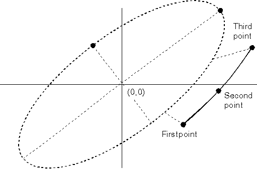

GpiPointArc draws an arc from the current position through an intermediate point to an end point. When the arc is drawn, the current position is at the end point of the arc. You specify both the intermediate point and the end point, and these values determine both the size of the arc and the direction in which it is drawn. The shape and the orientation of a 3-point arc are determined by the current arc parameters. The following figure shows how a 3-point arc is constructed. 
The 3-Point Arc
If the current arc parameters define an ellipse, that ellipse is scaled up or down to fit the three points of the arc.
When you want the three points of the arc to be points on a circle, allow the current arc parameters to default so they define a unit circle. You do not need to use the values p and q to specify the radius of the circle, because the radius is determined by the relative positions of the three points of the arc.